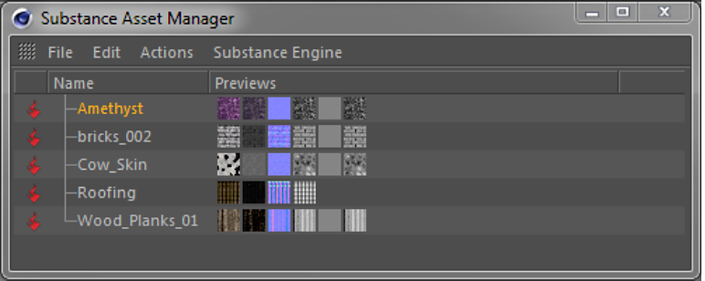
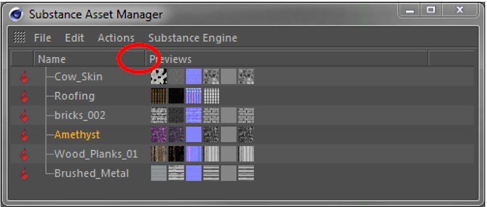
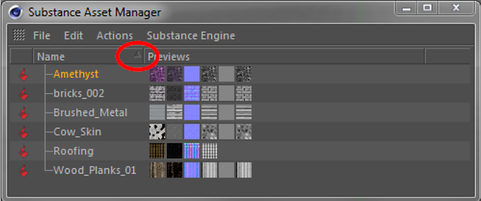

The Substance Asset Manager window lists all Substances loaded in a scene. Here you can add, remove and reorganize Substances.
Selecting (left click) a Substance inside the Substance Asset Manager opens the Substance in Cinema 4D's Attribute Manager. There you can change the parameters and keyframe Substance inputs like any other parameter in Cinema 4D.

Load a new Substance into the scene (same as in Plugins menu).
Close
Closes the Substance Asset Manager. Loaded Substances will of course stay in the scene.
Selects all Substances listed in the Asset Manager. Same can be achieved by pressing Ctrl+a, while the mouse is hovering over the Asset Manager.
Deselects all Substances listed in the Asset Manager. Same can be achieved by pressing Shift+Ctrl+a, while the mouse is hovering over the Asset Manager.
Selects all Substances that are referenced by the currently selected materials.
Selects all Substances that are referenced by the currently marked materials. In Cinema 4D, a material gets marked if an object or tag using this material is selected.
Selects all materials, that reference the currently selected Substances.
Create new Cinema 4D materials from the currently selected Substances. The material channels will automatically be initialized with Substance shaders referring to the respective output channels of the Substances.
Duplicate the currently selected Substances. This can be useful to use the same Substance with different parameter sets on multiple materials.
This function can be used to return to the default values of a Substance or to integrate external changes (e.g., from the Substance Designer).
Note: All parameter changes on the Substance inputs will be lost!
Removes currently selected Substances from the scene. The same can be achieved by pressing the Delete key while the mouse is hovering over the Asset Manager.
Removes all Substances currently not referenced by any material.
The content of this menu depends on the operating system on which Cinema 4D is running. Changing the Substance Engine will only take effect after a restart of Cinema 4D.
By right-clicking a selected Substance, the context menu will show up. Their functionality is the same as identically named functions in the aforementioned menus:
You can interact with the Substance Asset Manager via drag and drop. There are several available options:

